Tabletop: Mac Remote Desktop
VNC Screen Sharing & Trackpad · App Store (opens once 1.0 is approved) · all press kits · updated 11 Nov 2026
Tabletop shows your Mac's screen on iPhone and iPad and lets you click, type, scroll and drag on it. It uses the Screen Sharing that ships with macOS, so there is nothing to install on the Mac.
On iPhone Duo the app reads the hinge. Fold the phone halfway and the Mac moves to the top screen while the bottom screen becomes the keyboard and trackpad, split at the fold. It sits on a table like a laptop the size of a paperback.
What the fold does
- Halfway: Mac on the top screen, trackpad on the bottom. The split follows the hinge position the phone reports, so no control lands on the fold.
- Touch Strip Laptop style: adds a full keyboard under the picture and a strip of keys above it for Esc, Tab, Spotlight, Mission Control and the arrows.
- Flat: the inner screen shows a larger picture. Tap the picture to click, or use the trackpad under it.
- Closed: the cover screen gets a compact layout with the picture, a trackpad and the system keyboard.
- Screen Styles: the live desktop can sit inside any of ten shelf computers dated 1977 to 2001, each with its own screen glass, case and working keyboard.
Artwork
1920 × 1080. Every device in these images is a capture of the shipping app, placed in an iPhone Duo frame. The desktop is the developer's own Mac.

Launch

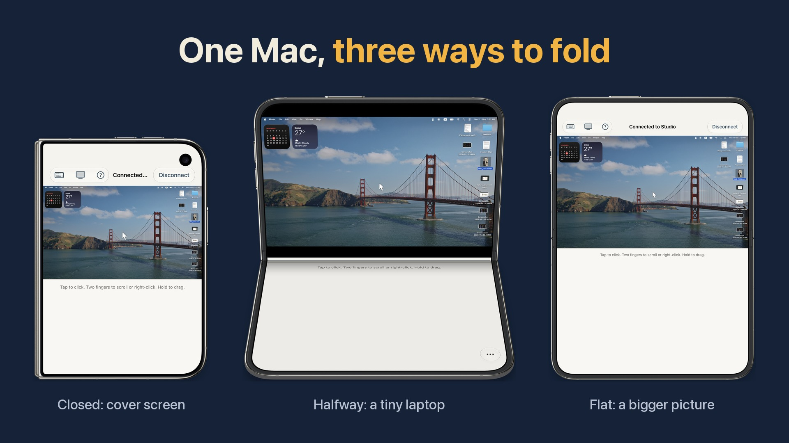
For new iPhone Duo owners, 24 Dec 2026 to 10 Jan 2027

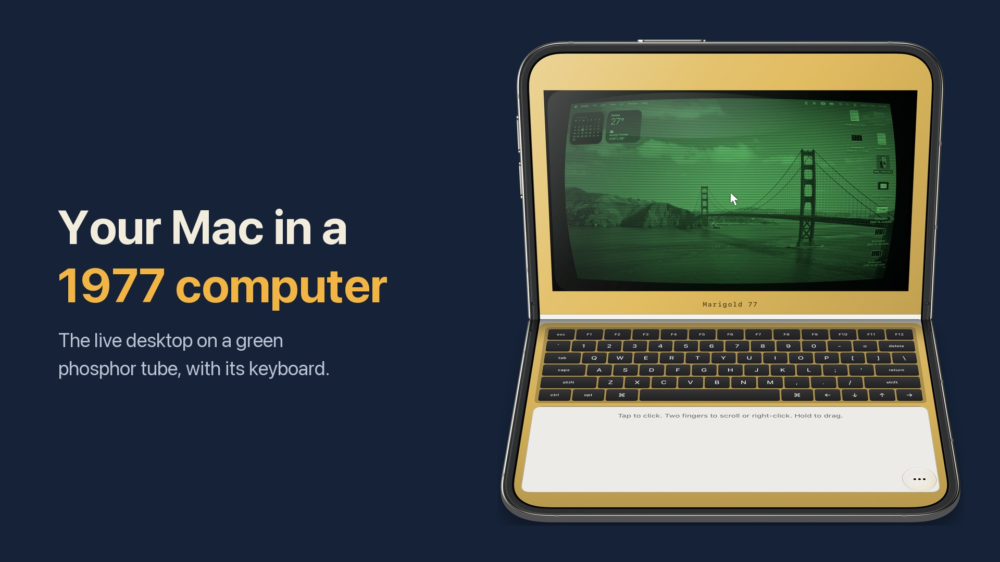
Fifty years of the home computer, January 2027

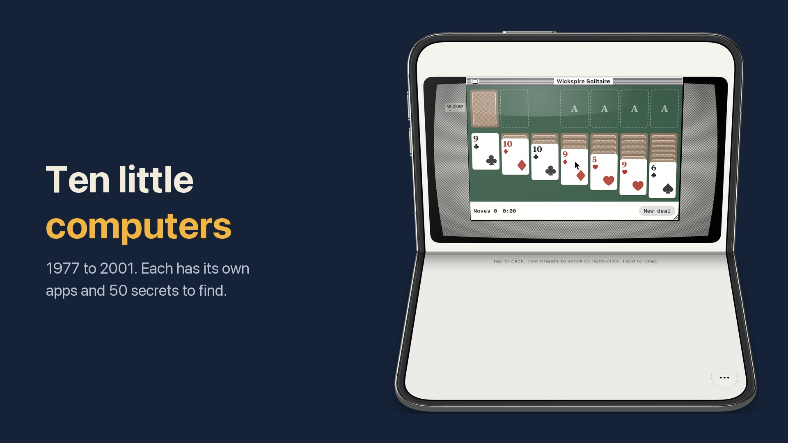
The shelf: machines dated 1977 to 2001 with their own apps

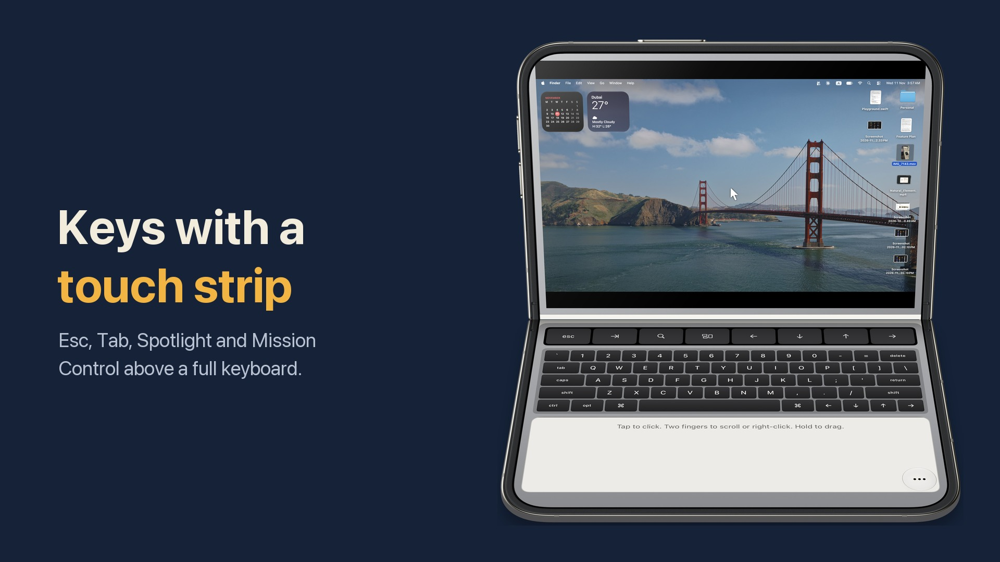
Touch Strip Laptop style

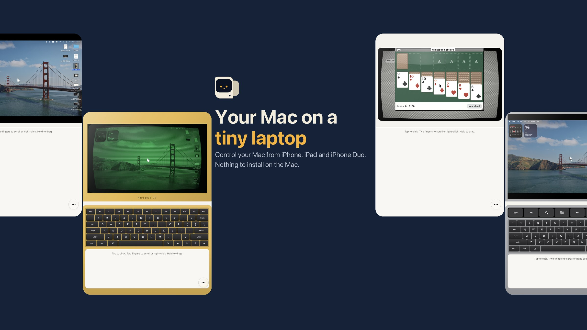
16:9 universal asset, English and Spanish (Mexico)
Screenshots
iPhone Duo App Store screenshots, English (US). The same set exists in English (UK, Australia, Canada) and Spanish (Mexico).

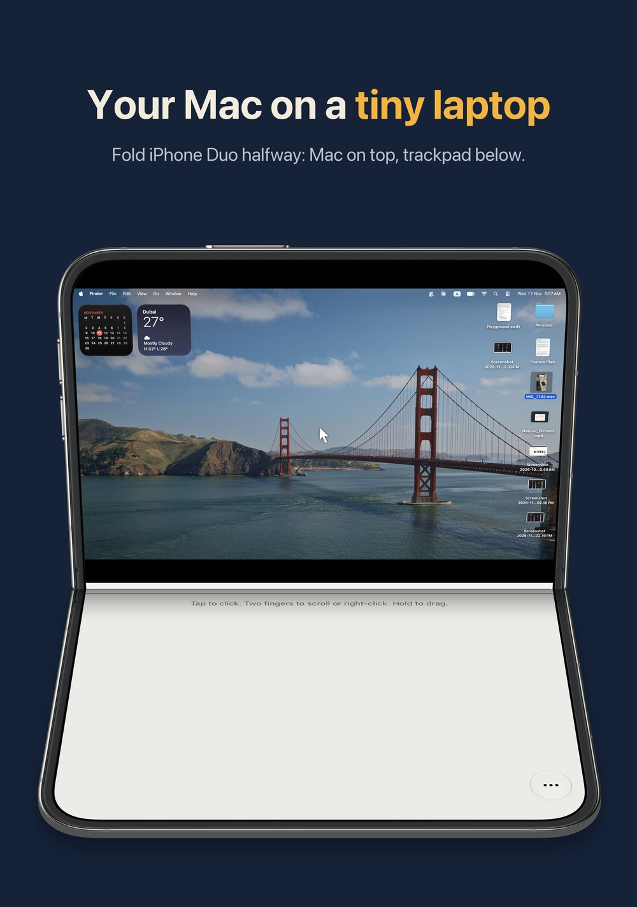

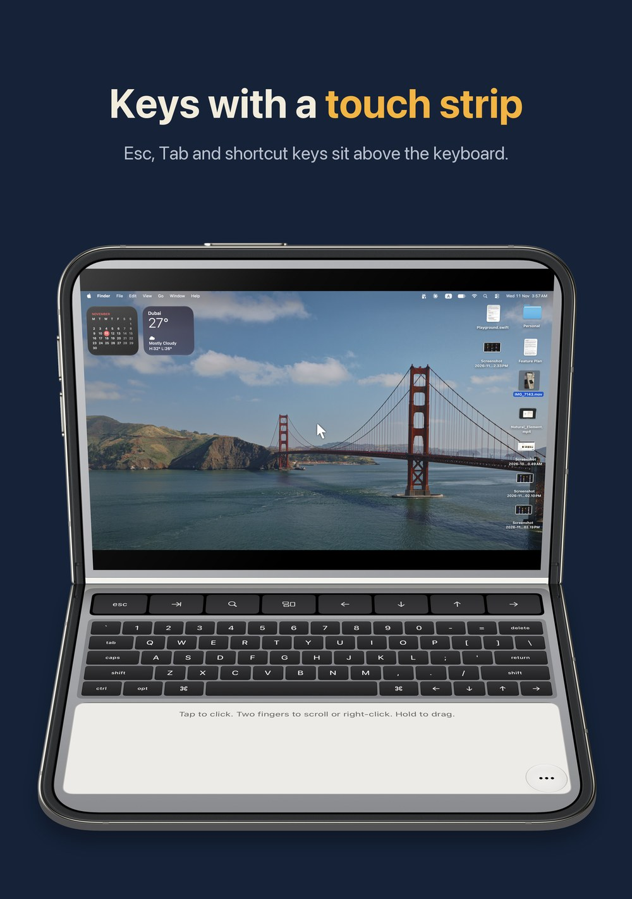

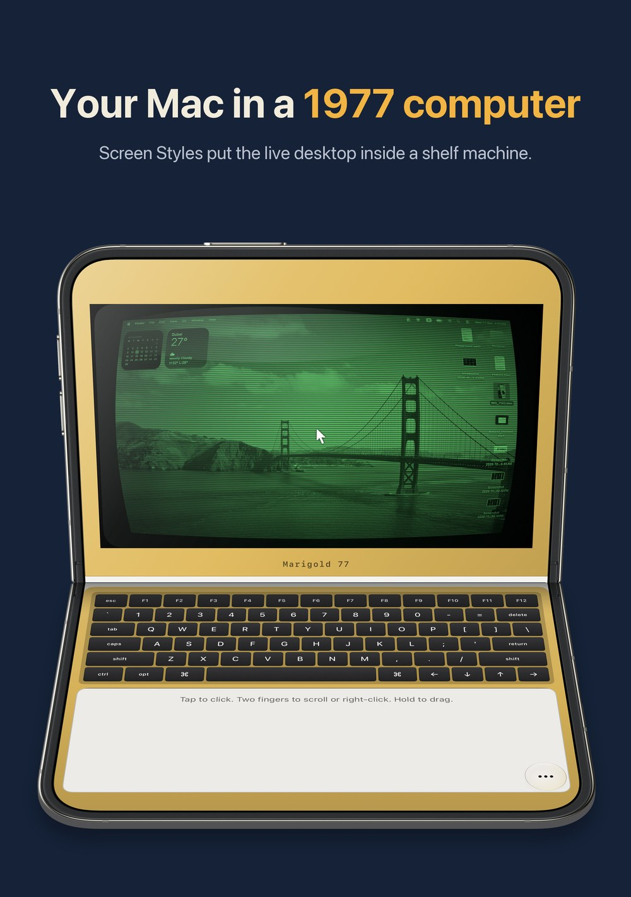

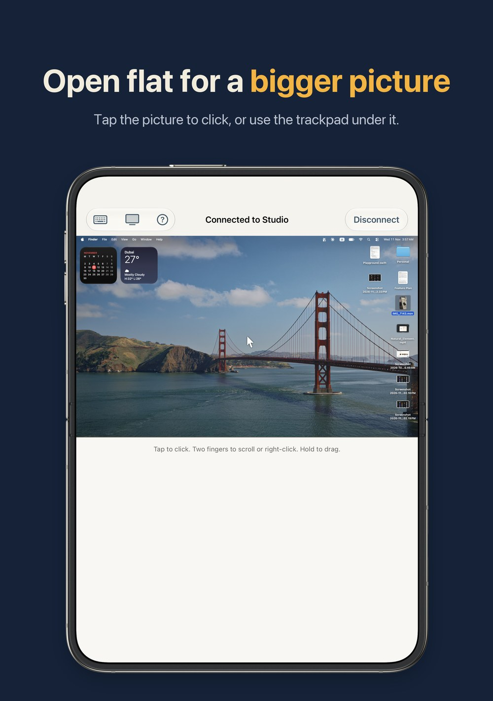

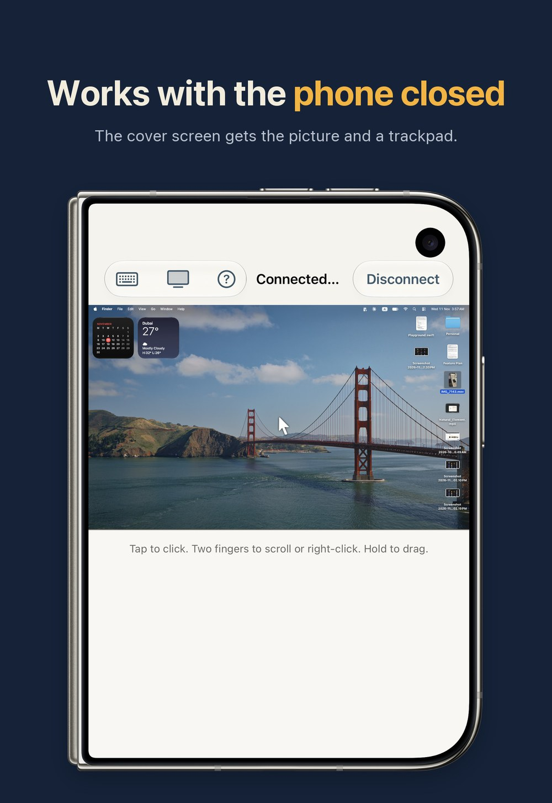

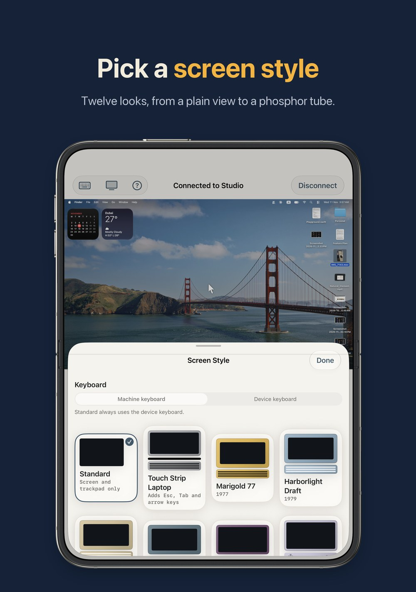
Facts
- Version
- 1.0, in App Review since 11 Nov 2026. It goes on sale as soon as it is approved.
- Platforms
- iPhone, iPhone Duo and iPad, iOS 17 or later. Built with the iOS 27.1 SDK.
- On the Mac
- Turn on Screen Sharing in System Settings. No helper app.
- Network
- Works on your own network. There is no relay server.
- Languages
- English (US, UK, Australia, Canada), Spanish (Mexico)
- Price
- Free, with nothing to buy inside the app
- Privacy
- No account and no data collected. Sign-in details stay in the Keychain on the device. Face ID can lock the list of Macs.
- System features
- Siri and Shortcuts action, Control Center button, iPad pointer and hardware keyboard, dark mode
- Developer
- Hemal Modi, one developer in Dubai
Dates
- iPhone Duo went on sale on 23 Oct 2026. Tabletop 1.0 is built for it from the first version.
- 2027 is fifty years after 1977, the year the Commodore PET, the Apple II and the TRS-80 reached the public: History of personal computers. The oldest machine on the Tabletop shelf, Marigold 77, is dated 1977. Every shelf machine is fictional.